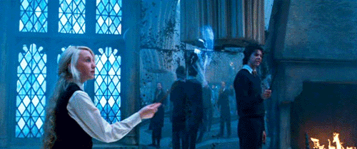
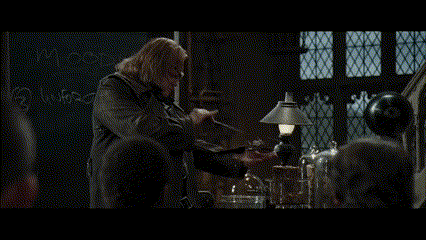

Expecto Patronum
Le sortilège du Patronus est un enchantement visant à faire apparaître un Patronus, un esprit protecteur, qui peut servir de bouclier contre certaines créatures ou faire office de messager.

Imperio
Le sortilège de l'Imperio est l'un des trois Sortilèges Impardonnables. Il contrôle totalement la personne touchée et n'est pas détectable à l'oeil nu.

Obliviate
Le sortilège Obliviate supprime des souvenirs à celui qui le subit, c'est un sortilège d'amnésie